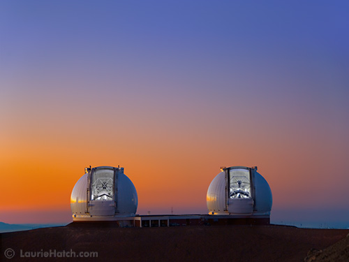

Swinburne University of Technology stands apart from other leading institutions by providing access to the W. M. Keck Observatory via an agreement with the California Institute of Technology (Caltech). Located near the summit of Mauna Kea, Hawaii, the twin Keck 10-meter telescopes are the largest and most productive optical/infrared telescopes in the world. Each telescope offers a suite of highly-sensitive instruments that utilise state-of-the-art technology.
Click here to access the current semester Call for Proposal information for the Keck Telescopes (internal access only)
Swinburne's vision has, and will continue, to pay great dividends in leading-edge research that pushes the technological envelope. Swinburne researchers using the Keck telescopes that have made a large impact in the field of astronomy and in our understanding of the Universe in which we live.
